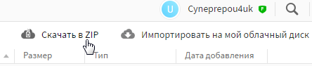
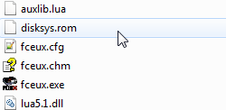
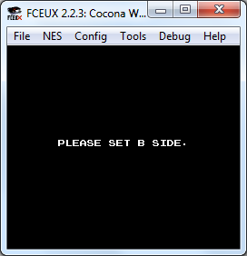
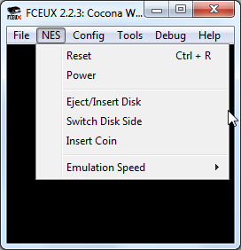
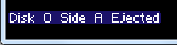
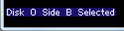
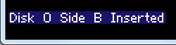
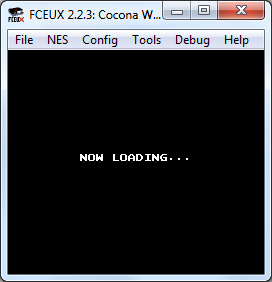
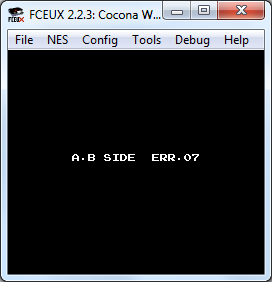

Эмулятор может отказаться открыть файл, если в пути к нему или в названии файла есть недопустимые символы.
Поддерживаемые типы файлов
У некоторых игр могут быть несколько официальных названий, зависящих от страны, для которой они разрабатывались. Иногда быстрее загуглить нужный ROM по имени.
Для скачивания с облака MEGA по моим ссылкам жми вверху на кнопку Скачать в ZIP.

Для распаковки архивов используй WinRar или 7-Zip.
.nes
Nintendo Entertainment System. Скачать GoodNES V3.23b.
GoodNES - сборка всех существующих ROM'ов игр NES, а также относительно старые хаки этих игр.
.unif
Universal NES Image Format. Присутствуют в сборке ROM'ов GoodNES.
.nsf
NES Sound Format. Содержит в себе музыкальный движок игры со всеми ее мелодиями, а иногда и со звуками. Скачать можно, например, с Zophar.net.
.fds
Famicom Disk System. Скачать FDS for FLASH v0.90a (17.12.2015).
Сборка от omonim2007.
Способы открыть игру
Открытие через эмулятор
Запусти файл fceux.exe для открытия эмулятора. В окне эмулятора выбери File -> Open.

Горячая клавиша для открытия окна Open File настраивается в Cоnfig -> Map Hotkeys -> Filter -> Tools -> Open ROM.
Затем найди нужный файл с игрой в окне Open File. Можно открывать игры, запакованные в .zip архив.
Список последних открытых файлов будет находиться в File -> Recent, можно открывать игры через этот список. Список обновляется после закрытия эмулятора.
Автоматическое открытие окна Open File
Можно сделать так, чтобы окно Open File вызывалось автоматически сразу после запуска эмулятора. Для этого выбери Config -> GUI и поставь самую первую галочку.

Еще один способ открыть окно GUI Configuration - кликнуть правой кнопкой посредине окна эмулятора и выбрать самую нижнюю опцию Use Config.
Открытие через перетаскивание файла
Перетащи файл с игрой на файл fceux.exe.

Также можно перетаскивать файл с игрой на ярлык эмулятора, если, например, вывести ярлык на рабочий стол.
Открытие через файл с игрой
В свойствах любого файла .nes выбери файл fceux.exe как программу для открытия по умолчанию.

После сохранения настроек запусти файл .nes, и эмулятор откроется вместе с этой игрой.
Если изменить местоположение файла fceux.exe, вероятно потребуется заново зайти в свойства файла .nes и выбрать fceux.exe из той папки, куда был перемещен эмулятор.
Запуск FDS игр
BIOS
Для эмуляции FDS дополнительно требуется BIOS файл с названием disksys.rom. Скачать его можно здесь.
По умолчанию этот файл не входит в комплект эмулятора. Как и в случае с образами игр, распространение файлов BIOS считается не совсем легальным занятием.
Этот файл нужно поместить в корневую папку эмулятора. Без него эмулятор будет выдавать сообщение об ошибке при попытке открыть игру.

Смена стороны диска
На протяжении игры обычно требуется по несколько раз переворачивать стороной эмулируемые диски. По умолчанию диск вставлен стороной A.
Требование вставить диск другой стороной, например стороной B, выводится самой игрой примерно в таком сообщении.

Действия по диску осуществляются через владку NES. Eject/Insert Disk - вынуть/вставить диск, Switch Disk Side - перевернуть сторону диска. Команды работают и во время паузы эмулятора.

Для этих действий можно настроить горячие клавиши в Config -> Map Hotkeys -> Filter -> FDS.
Вынимаем диск
Чтобы диск можно было перевернуть, сначала его необходимо вынуть. Выбираешь NES -> Eject Disk. На экране появится сообщение о том, что был вынут диск A.

Переворачиваем диск
Теперь переворачиваем диск другой стороной. Выбираешь NES -> Switch Disk Side. Эмулятор сообщит что была выбрана сторона B.

Вставляем диск
И затем вставляем перевернутый диск назад через NES -> Insert Disk. На экране сообщение о том, что вставлен диск стороной B.

Чтение диска
Игра сама начнет загружать вставленный диск.

Если была выбрана правильная сторона диска, игра продолжится. Если нет, вылезет ошибка.

В этом случае нужно опять вынуть диск, повернуть правильной стороной и вставить назад.